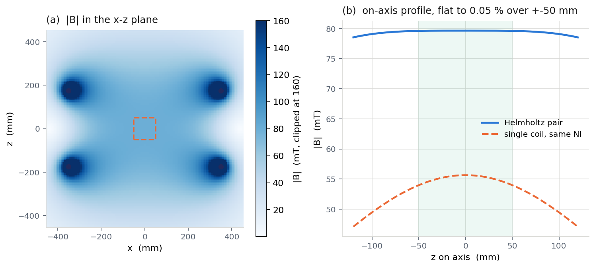
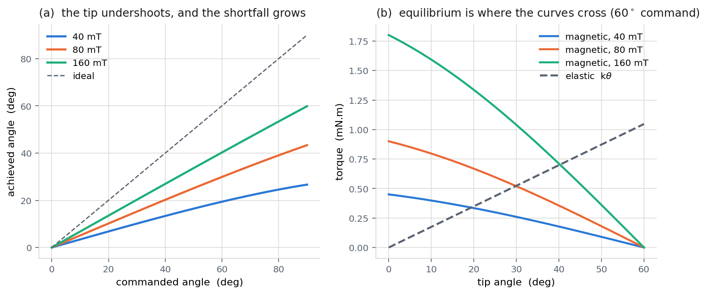
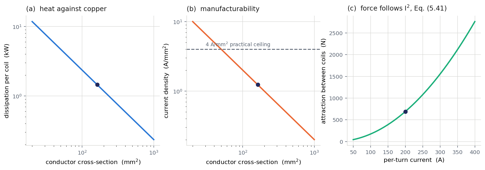
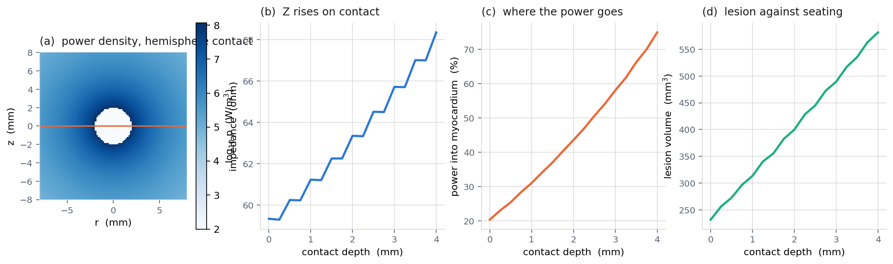
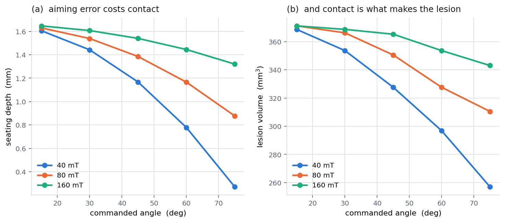

Navigation field
Biot–Savart magnetic field, center field, field map and uniformity.
A numerical study of magnetic navigation, catheter steering, coil engineering, and electrical conduction in cardiac tissue.
Our verified simulation links external coil current to magnetic steering, electrode seating, conduction in blood and myocardium, and an electrical power-density lesion proxy.
We then recommend a field strength while accounting for electrical power, cooling, and mounting forces. This is a computational classroom model, not a clinical device or a validated treatment prediction.
VIEW THE PROJECT HANDOUT ↗What the assignment asks us to compute.
Biot–Savart magnetic field, center field, field map and uniformity.
Current-loop force, dipole torque and the catheter's equilibrium angle.
Wire resistance, power, heat, cooling and forces between coils.
Voltage, current density, impedance, power split and lesion proxy.
Connect the models and propose a field strength with uncertainty and cost.
Full five-milestone presentation with outputs from the professor’s supplied starter-kit baseline. Use the arrows or keyboard to explore.
A recorded video can be embedded here later. The figures and verified technical results are already available in the slideshow and final report.
Complete technical documentation from the official 29-test-verified starter-kit implementation. The consolidated 10-page report and one-page recommendation are available below and in References.
The instructor baseline uses two Helmholtz coils, each 350 mm in radius, separated by 350 mm, with 155 turns and 200 A per coil. A discretized Biot–Savart field matches the analytical center field, and uniformity is evaluated over the working region.

Field map and analytical profile produced by the official M1 script.
The catheter tip is modeled as a magnetic dipole and equivalent current loop. Magnetic torque competes with the catheter shaft’s restoring stiffness. At a 60° command, 80 mT achieves approximately 29.9°.

Official commanded-angle and torque-balance calculations.
The baseline winding has 155 turns of 200 A current and 162 mm² copper conductor area. The coils dissipate significant heat and exert a substantial attractive mounting load. Free convection alone is insufficient.

Electrical and mechanical tradeoffs from the official winding geometry.
The provided axisymmetric finite-volume solver models a spherical electrode at a blood–myocardium interface. The official model uses 25 V applied potential, a 40 mm return boundary, and a 1.2×10⁶ W/m³ electrical proxy threshold.

Joule power-density map, impedance, tissue power fraction and volume proxy. This is not a clinical lesion prediction.
The official geometric seating equation links steering error to electrode contact depth. The integrated study compares 40, 80 and 160 mT over 15°–75° commanded angles. A conditional 80 mT choice meets a selected illustrative 290 mm³ proxy screen but would need redesigned coil cooling.

Full five-milestone simulation, using the provided seating geometry and official baseline constants.
Official project handout, verified final technical report and recommendation, plus all five standalone milestone reports. Earlier milestone PDFs document illustrative development cases; the verified final report uses the official starter-kit baseline.
Choose a reference above or from the menu. PDF files open directly from the GitHub Pages repository root.